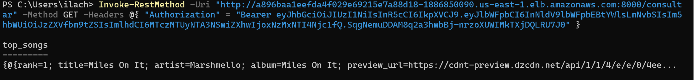

Guia de Configuração e Implantação no Amazon EKS
Este guia detalha o processo de configuração de um ambiente Kubernetes no Amazon EKS, desde a criação da conta até a implantação da aplicação.
1. Configuração Inicial na AWS
Para iniciar, configurei a minha conta AWS com permissões administrativas, para garantir controle total sobre os recursos da AWS e a possibilidade de configurar credenciais adicionais para uso programático.
2. Configuração de Credenciais do AWS CLI
Para interagir com os serviços AWS diretamente do terminal, foi necessária a configuração do AWS Command Line Interface (CLI). O primeiro passo foi gerar uma Access Key no IAM, que nos da uma Secret Key.
Essas credenciais são utilizadas pelo CLI para autenticação e execução de comandos de forma segura.
3. Instalação do AWS CLI
O AWS CLI foi instalado seguindo a documentação oficial. A seguir está um resumo dos passos seguidos:
-
Download do instalador: AWSCLI64PY3.msi.
-
Execução do instalador MSI, a partir da execução do arquivo baixado e wizard de instalação.
-
Verificação da instalação com o comando:
aws --version -
Configuração do ambiente com
aws configure:- Adição do Access Key e da Secret Access Key.
- Definição da região padrão (us-east-1).
- Definição do formato de saída padrão como JSON.
-
Instalação e Configuração do eksctl
Para gerenciar
clusters Kubernetesde forma simplificada no Amazon EKS, utilizamos oeksctl. Ele automatiza a criação e configuração dos clusters, reduzindo a complexidade operacional.Comando executado:
eksctl create cluster --name cluster-projnuvem --nodes 2Nome do cluster: cluster-projnuvem. Nós: 2, conforme especificado na documentação do projeto.
Esse comando criou um cluster funcional com dois nós prontos para execução de workloads.
-
Atualização do kubeconfig
Após a criação do cluster, foi necessário configurar o arquivo
kubeconfiglocal. Esse arquivo permite o gerenciamento do cluster através do kubectl, a principal ferramenta de interação com Kubernetes.Comando utilizado:
aws eks update-kubeconfig --name cluster-projnuvemEsse passo garantiu a conexão entre o ambiente local e o cluster no EKS, habilitando a execução de comandos Kubernetes diretamente.
-
Criação dos Arquivos YAML para Deployments
Para implantar os serviços no Kubernetes, foram criados dois arquivos YAML baseados no
compose.yamloriginal do projeto:db-deployment.yaml: Define a configuração do banco de dados MySQL.app-deployment.yaml: Especifica a aplicação FastAPI.Função dos Deployments:
- Banco de Dados: - Garante a persistência e escalabilidade do MySQL. - Configura um serviço interno para comunicação com a aplicação. - Aplicação: - Implanta a API da aplicação. - Expõe a aplicação ao público utilizando um LoadBalancer. -
Aplicação dos Deployments no Cluster
Com os arquivos YAML configurados, os deployments foram aplicados ao cluster com os seguintes comandos:
kubectl apply -f db-deployment.yaml kubectl apply -f app-deployment.yamlPara verificar o status dos pods e serviços, foram utilizados:
kubectl get pods kubectl get servicesEsses comandos garantem que os serviços estejam em execução e acessíveis, como pode-se observar na seguinte imagem:
-
Acesso à Aplicação
O serviço da aplicação foi configurado com um
LoadBalancer. Para acessar a aplicação:-
Obtenha o endereço externo:
kubectl get service app -
Validar a aplicação via testes da API no terminal, assim como anteriormente. Lembre-se de trocar o IP
localhostpara o IP externo do serviço app: http://EXTERNAL-IP:8000
Validação
Registro de usuário:
Login de usuário:
Consulta da API:

Video de teste
https://drive.google.com/file/d/18933qpHzV_urL01rw8eejWsuAWL2aPGQ/view?usp=drive_link
-